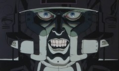

Ahogy legutóbb, most is egy sci-fi anime antológiáról írok egy rövid bemutatót.
Taku Mayumura története alapján Masao Maruyama producer keze alatt három, méltán híres rendezőt (Rintaro, Yoshiaki Kawajiri, Katsuhiro Ôtomo) szedtek össze, hogy Neo Tokyo címmel egy filmben vászonra vigyék a következő három nem mindennapi történetet.
Sajnos nem találtam meg az eredeti trailert, így nekem kellett összevadászni valamit a netről. A következőt sikerült:
https://www.youtube.com/watch?v=T9wLTSgfNOA
Rintaro – Labyrinth-Labyrintos
Rintaro rendezte a híres, 2001-es Metropolis című animét, ami ha jól emlékszem világsiker volt, de ha nem az sem érdekel, mert én nagyon szeretem. A rendező viszonylag nehéz feladatot kapott azzal, hogy egyfajta keretet kellett készítenie, ami összefogja az egész filmet.
Rögtön a film elején egy igazán furcsa világba kerülünk, ahol egy kislány, Sachi és a macskája, Cicerone fogócskáznak. Játék közben pedig egy ingaórán keresztül egy rémisztő és számukra mégis érdekes és mulatságos labirintusba jutnak, melynek végén egy cirkusz áll. Egy bohóc várja őket a bejáratnál, aki utat mutat nekik, így vezetve át a nézőt az anime következő rövidfilmjébe.


Labyrinth-Labyrintos
Yoshiaki Kawajiri – The Running Man
Valahol a jövőben az emberek egyik kedvenc sporteseménye egy gyilkos „autóverseny.” Egy ilyen versenyre látogat el a történet narrátoraként szereplő újságíró. Egy cikket ír az eddigi legsikeresebb versenyzőről, Zach Hugh-ról, aki már tíz éve versenyez és minden futamát túlélte. Az újságíró, hogy miképpen, azt nem lehet tudni, bejut Hugh-hoz, aki éppen elmélyülten koncentrál. Ekkor az újságíró rájön, hogy Zach Hugh valamiféle telekinetikus képességgel rendelkezik, ugyanis koncentrációja során maga körül mindent összezúz valamiféle láthatatlan erő.
A verseny során Hugh minden ellenfele és maga Hugh is saját erejének áldozata lesz. Egy elhasznált, kiégett embert mutat be ez a film: „A szíve, amely valaha másokat olyan erősen buzdított már saját magát sem buzdította, csak megszokásból dobogott, mert erre képes volt.”
 
The Running Man
Katsuhiro Ôtomo – Construction Cancellation Order
Azt hiszem Katsuhiro Ôtomo munkásságát nem kell ecsetelnem, mert ezt szerintem több korábbi bejegyzésemben is megtettem, szóval most ezt át is ugrom, és rátérek a lényegre.
Egy dél-amerikai köztársaság, Aloana újonnan választott kormánya felbont egy korábban kötött, hatalmas szerződést az államnak épülő, és jelenleg félkész állapotban levő 444-es komplexumról. A kivitelező vállalat sietve kiküldi a teljesen automatizált építkezésre Tsutomu Sugioka-t felügyelőnek, hogy azonnal állítsa le azt, és hogy derítse ki mi történhetett a korábbi felügyelővel, akit a cég nem tud elérni. Hősünk meg is érkezik a dzsungel mélyén levő 444-es építkezésre, ahol a 444-1-es számú robot fogadja, és vezeti körbe. Sajnos Sugioka-nak nem sikerül a robottal leállíttatni a munkálatokat, és helyzete egyre kilátástalanabbá válik. A gépek egyszerűen nem engedelmeskednek az új felügyelőnek, az építkezés pedig folyamatosan nyeli a pénzt.
Tsutomu Sugioka majdnem arra a sorsa jut, ami a korábbi vezetőé lehetett, bezárják. Végül elpusztítja a 444-1-es robotot, elindul, hogy elpusztítsa a gépeket összekötő központot, ezáltal leállítva az egész építkezést. Eztán érkezik egy új utasítás, mely szerint azonnal folytatni kell az építkezést, mivel a kivitelezőnek sikerült megegyezésre jutni az új kormánnyal. Tsutomu Sugioka erről az üzenetről már nem értesül. Tökéletes bemutatása ez ember és gép ellentétének és egyben egymásra utaltságának.


Construction Cancellation Order
Sajnálom, hogy ez a poszt ilyen rövidre sikeredett, de most, éjfél felé már elég fáradt vagyok. Végszó!
Ugyan az egész film csak ötven perc, de mindenképp megéri megnézni. Lélegzetelállító látvány, csodálatos mechanical design, magával ragadó képi világ és zene, végül, de nem utolsó sorban eredeti történet. Remélem ennél senkinek sem kell több. (Szívesen megnézném moziban.)


{kind=link}
{kind=link}